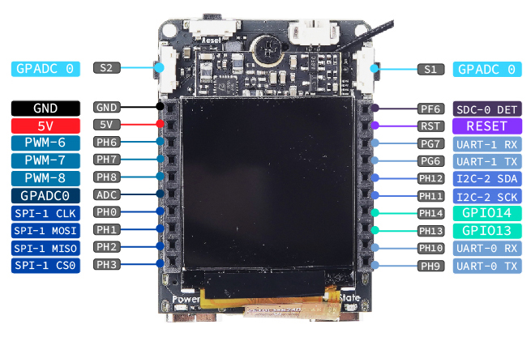

Linux PWM 的使用
| 更新时间 | 负责人 | 内容 | 备注 |
|---|---|---|---|
| 2022年1月4日 | Rui | 初次编写文档 | --- |
| 2022年1月8日 | Rui | 修改文档的编写方式 | 使用 Jupyter notebook 进行编写文档 |
| 2022年1月18日 | Rui | 修改文档，增加效果图 | 外设文档通过测试的平台有 MaixII-Dock,使用的是 MaixPy3 0.4.0 |
MaixPy3 把 Linux 系统中的 PWM 的使用方法进行封装和简化使用，让用户使用起来更加的简单
使用方式
PWM 的使用方式和 GPIO 的类似，需要根据管脚定义图确定所使用的 PWM 通道序号，下面以 MaixII-Dock 为例子讲述如何使用 MaixPy3 中的 PWM
准备
查看开发板的管脚定义图，选择 PWM 输出通道序号，PWM-x 是指 PWM 的输出通道序号

这里选择使用 PWM-6
开始
先将 PWM-6 实例化，设置周期和占空比，最后是使能 PWM，就可以输出了，具体代码看下面
In [1]:
from maix import pwm
import time
pwm6 = pwm.PWM(6)
pwm6.export()
pwm6.period = 20000000 # 表示 pwm 的周期，单位 ns
pwm6.duty_cycle = 500000 # 表示占空比，单位 ns
pwm6.enable = True # 表示是否使能 pwm
for t in range (3):
for i in range(500000, 15000000, +100000):
pwm6.duty_cycle = i
time.sleep(0.05)
for i in range(15000000, 500000, -100000):
pwm6.duty_cycle = i
time.sleep(0.05)[ rpyc-kernel ]( running at Mon Jan 17 16:58:42 2022 )
Out[1]:
Traceback (most recent call last): File "<string>", line unknown, in <module> Remote.KeyboardInterrupt